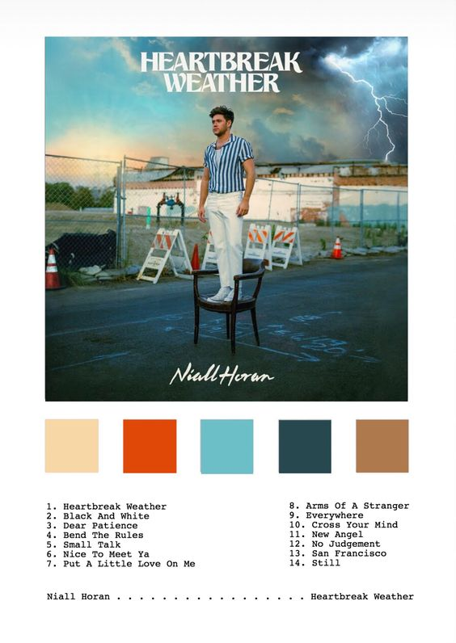
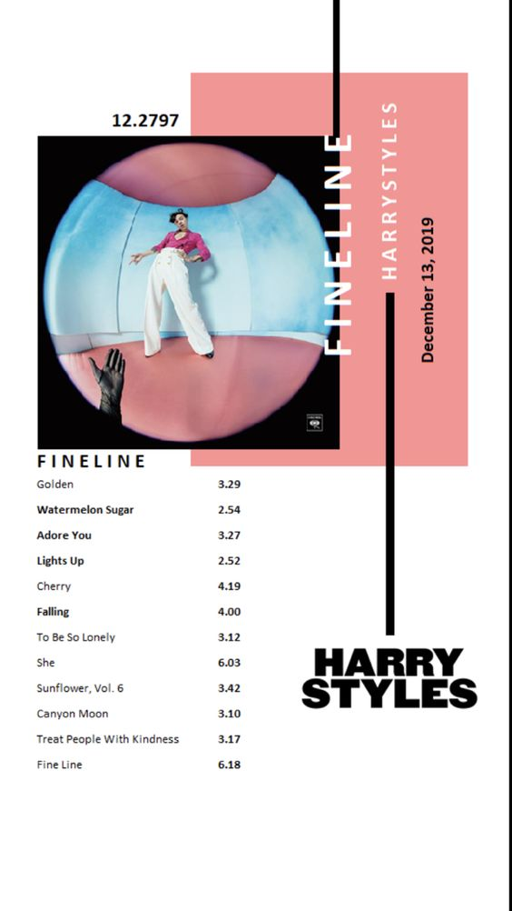
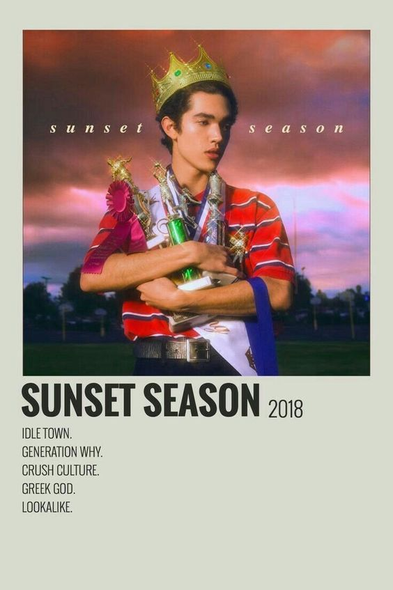
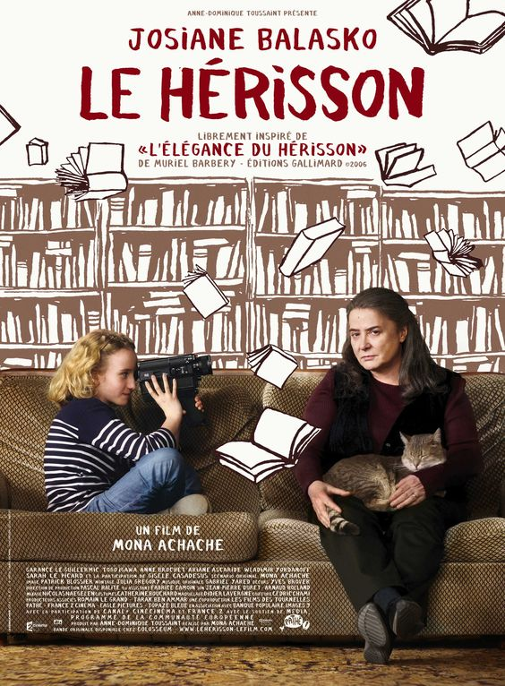
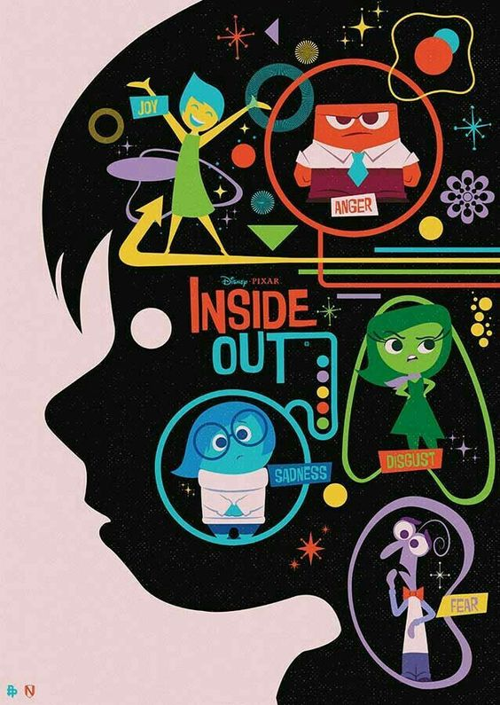
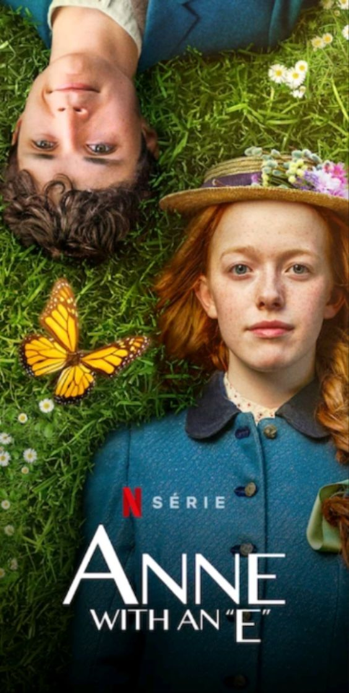
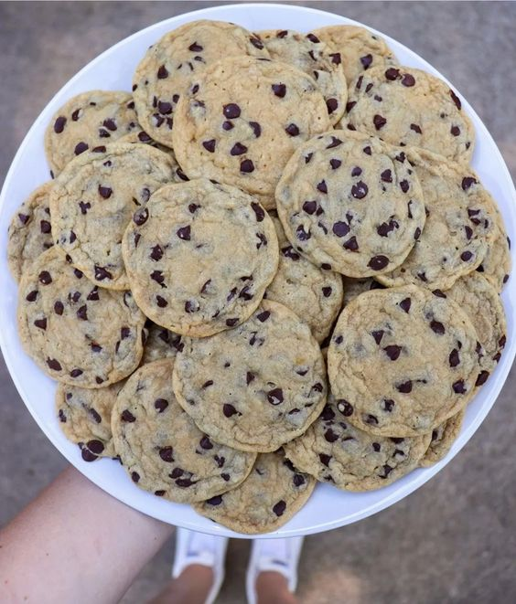

<!DOCTYPE hmtl>
<hmtl lang="es">
		<head>
			<meta charset="utf-8">
			<title>MI SITIO WEB</title>
			<link rel="stylesheet" type="text/css" href="css/main.css">
			<link href="https://fonts.googleapis.com/css2?family=Roboto+Mono:wght@200&display=swap" rel="stylesheet">
			<link rel="shorcut icon" href="img/Home/favicon2.png">
		</head>
		<body>
			<header id="main-header">
				<nav>
					
					<center><ul>
						<li><A href="index.html">Inicio</A></li>
						<li><A href="sobremi.html">Sobre mi</A></li>
						<li><A href="hobbies.html">Hobbies</A></li>
						<li><A href="galería.html">Galería</A></li>	
						<li><A href="recomendaciones.html">Recomendaciones</A></li>
						<li><A href="contacto.html">Contacto</A></li>
					</center></ul>
				</nav>
			</header>
			<center><h5><i>Recomendaciones</i></h5></center>
	<div id="separador"><br></div>
	<div id=musica>

		<center><h5><i>Música</i></h5></center>
		<center><p class="música"> La música ocupa una parte muy importante en mi vida, tiene repercuciones en mi mente, en mis emociones y en mi espíritu, me permite alcanzar un nivel adecuado de bienestar y felicidad, me transmite diferentes estados de ánimo y emociones que liberan la función tanto emocional, como afectiva e intelectual. Te comparto mis tres artistas favortios. </p></center>
	
		<table border="1" width="100%">
		<tr>
			<th>Niall Horan</th>
			<th>Harry Styles</th>
			<th>Conan Gray</th>
		</tr>
		<tr>
			<td>Es un cantante y compositor irlandés, conocido en el mundo de la música por ser uno de los integrantes de la banda One Direction.</td>
			<td>Cantante, compositor y actor inglés, ex integrante de One Direction. Comenzó una carrera como solista lanzando su primer álbum "Harry Styles" en abril del 2017 y "Fine Line" lanzado en 2019 </td>
			<td>Cantante, compositor y personalidad de interner, nacido en Texas y con 21 años que se ha convertido en una de las mayores promesas del Indie pop y Pop, en 2018, hace su debut con el EP «Sunset Season». </td>
			<tr>
			<td></td>
			<td></td>
			<td> </td>
		</tr>
		</table>
	</div>
	<div id="separador"><br></div>
	<div id=pelisseries>
	<center><h6><i>Películas y series</i></h6></center>
		<center><p class="peliss"> Sinceramente, no se necesitan muchas excusas para ver películas o series es entretenido, siempre hay alguna de nuestro gusto y no requiere mucho esfuerzo a ver una, estás son mis favoritas y te recomiendo verlas.</p></center>
		<table id="pelis" width="100%">
	<tr>
				<th>La elegancia del erizo</th>
				<th>Series</th>
				<th>Intesamente</th>
			</tr>
			<tr>
				<td rowspan="2">Cuenta la historia de Paloma Josse, una niña muy inteligente de once años que, desencantada por lo que cree que le depara el futuro, decide suicidarse el día de su duodécimo cumpleaños. Paloma comienza a documentar su entorno con una vieja filmadora que le da su padre, explicando de ese modo el motivo de su decisión. A través de la lente de su cámara empieza a conocer a la portera del edificio en el que vive, Renée Michel, a quien la niña describe como un erizo, y a Kakuro Ozu, el nuevo propietario de un apartamento, con los que entabla amistad.<center></center></td>
				<td>"3%"" la trama se desarrolla en un futuro distópico en el que la sociedad está dividida entre los que viven en la pobreza y la desigualdad, en el Continente y los están en un lugar paradisiaco, con riqueza y sin ningún problema, llamado Mar Alto. Los habitantes del Continente tienen la oportunidad de cambiar su destino e irse a vivir a Mar Alto cuando cumplen 20 años, para hacerlo, deben pasar duras pruebas, llamadas el Proceso, y solo el 3% lo logrará. <center></center></td>
				<td rowspan="2"> La historia de Riley, una joven niña que está en su transición de la niñez a la adolescencia y mientras se da ese cambio personal, su vida tiene un giro de 360° al mudarse de un pequeño pero acogedor pueblo de Minnesota a San Francisco; un lugar muy diferente, extraño que hace que todas las emociones que viven en el interior de Riley estén fuera de control. <center></center></td>

			</tr>
			<tr>
				<td>"Anne with an E" Anne Shirley es una niña huérfana que vive en un pequeño pueblo llamado Avonlea que pertenece a la Isla del Príncipe Eduardo, en el año 1890. Después de una infancia difícil, donde fue pasando de orfanato a hogares de acogida, es enviada por error a vivir con una solterona y su hermano. Cuando cumple 13 años, Anne va a conseguir transformar su vida y el pequeño pueblo donde vive gracias a su fuerte personalidad, intelecto e imaginación<center></center></td>
			</tr>
		</table>
		<div id="separador">
		<center><h6><i>Receta favorita</i></h6></center>
			<table id=".recetas" width="100%">
  <tr>
    <th>Galletas de chispas de chocolate</th>
</tr>
  <tr>
    <td><center><i><h6>Ingredientes</h6></i></center>
    	<ol> 
    	<li>3 tazas harina de almendra</li>
		<li>1/4 taza azúcar</li>
		<li>1/4 taza azúcar mascabado</li>
		<li>2 huevos</li>
		<li>1 1/2 cucharadas cafeteras de polvo para hornear</li>
		<li>1/2 taza mantequilla suave</li>
		<li>1/2 taza chispas de chocolate</li> 
		<li>Pizca de sal</li> <li>Polvo para hornear</li>
		</ol>
	</td>
  </tr>
   <tr>
    <td><center><i><h6>Pasos</h6></i></center> 
    	<ol>
    	<li>En un bowl mezclar la mantequilla con el azúcar normal, el azúcar morena, agregar la vainilla, incorporar bien</li>
		<li>En un bowl agrega un huevo y la pizca de sal</li>
		<li>En un bowl agrega la harina tamizada y polvo para hornear, incorpora todo hasta que quede una masita</li>
		<li>Agrega unas chispas de chocolate e incorporarlas bien a la masa</li>
		<li>Poner las charolas con un pedazo de papel encerado y con una cuchara forma unas bolitas y termina de hacerlas con la mano</li>
		<li>Meta a congelar las bolitas de galleta por 15 minutos</li>
		<li>Cuando las galletas estén duras, ponlas a hornear a 180 grados durante 30 minutos</li>
		<li> ¡A disfrutar!</li> <center></center>
		</ol>
	</td>
  </tr>
</table>
</div>
		<div id="footer">
			<footer>
				<tr>
					<th>
					<th> <a href="https://instagram.com/melilaaandon?igshid=ixugqjf1dplr" target="blank">Instagram: @melilaaandon </a> </th>   
					<div>       
					<footer>
						<th>
					<th><a href="https://www.facebook.com/melissa.landon.334" target="blank"> Facebook: Melissa Landon </a></th>
					</div> 
					</footer>
					<div>
					<footer>
						<center><th>¡Gracias por tu visita!</th></center>
					</footer>
					</div>
				</tr>
			</footer>
		
		</body>
		</html>